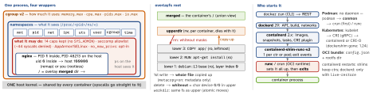

linux · folio
In one line: A container is an ordinary Linux process on the shared host kernel: namespaces limit what it can see, cgroups limit what it can use, capabilities + seccomp + an LSM limit what it may do, and an overlayfs root built from read-only image layers is what it stands on. No hypervisor, no guest kernel — a kernel bug is an escape.
Download PDF Print view LaTeX source


The 8 namespaces
ns | since | isolates | what bites |
|---|---|---|---|
mnt | 2.4.19 | the mount list; pivot_root to the rootfs | systemd makes / shared — set private |
uts | 2.6.19 | hostname, NIS domain | — |
ipc | 2.6.19 | SysV IPC, POSIX message queues | SysV shm between ctrs needs one ns |
pid | 2.6.24 | PID numbers; 1st child = PID 1 | the host still sees the real PID |
net | 2.6.24 | devices, stacks, routes, firewall, ports, abstract sockets | a new one has only lo, and it is down |
user | 3.8 | uid/gid maps, capabilities | root inside ≠ root outside |
cgroup | 4.6 | cgroup root in /proc/self/cgroup | hides the host’s cgroup path |
time | 5.6 | MONOTONIC + BOOTTIME offsets | not REALTIME; for checkpoint/restore |
/proc/<pid>/ns/<type>is a handle: an open fd or a bind mount keeps the namespace alive with no process (ip netns add).setns(fd)joins; since 5.8fdmay be a pidfd → several namespaces at once.nsenter -t PID -n,lsns; per-user quotas in/proc/sys/user/max_*_namespaces.- PID, time:
unshare/setnsmove only future children (pid_for_children,time_for_children) →unshare --pid --fork. PID and user namespaces nest ≤32 deep. - Init exits → the kernel SIGKILLs the whole PID namespace; a later
forkinto it failsENOMEM. A dying net ns hands physical NICs back to the initial ns and destroys its veths.
User namespaces and rootless
- Unprivileged since 3.8: the creator gets the full capability set inside its user ns and none in the parent; mount, PID, net … then need
CAP_SYS_ADMINonly there — the basis of rootless. Unmapped ids show as 65534. - Unprivileged, you may map only your own uid (and write
denytosetgroupsbeforegid_map); ranges come from setuidnewuidmap/newgidmapreading/etc/subuid(alice:100000:65536; Docker rootless wants ≥65 536). Container uid 33 = host 100032. - Rootless network: pasta (Podman 5.0 default; slirp4netns removed in 6.0). Overlay mounts inside a user ns: 5.11 (
userxattr). - Idmapped mounts (
mount_setattr, 5.12): one mount shows files with shifted owners — no recursivechownof an image; ext4, XFS, btrfs, tmpfs, overlayfs … - Docker: no user ns unless
userns-remap— container root is host uid 0, held back only by caps, seccomp, LSM. KuberneteshostUsers: false: stable in 1.36 (kernel ≥6.3), 65 536 ids per pod.
Root switch and mount propagation
- Runtime: new mount ns → mount the rootfs →
pivot_root(new, put_old)→ unmount the old root (MNT_DETACH): the host tree is gone, not hidden.chrootonly moves path lookup —mkdir foo; chroot foo; cd ..escapes it; “not intended … for any kind of security purpose”. - shared (peer group, both ways) · slave (receives only) · private · unbindable. systemd remounts all as shared at boot, so a runtime marks the container’s tree private/slave or its mounts leak back;
unshare(1)defaults to private; a less privileged ns gets slave, locked mounts. Readshared:N master:Nin/proc/self/mountinfo.
Example — a container by hand
# new pid+mnt+uts+net ns, fresh /proc: bash becomes PID 1
sudo unshare --pid --fork --mount-proc --uts --net bash
hostname box; ps ax; ip link # 2 procs; only lo (down)
unshare --user --map-root-user id # no sudo: uid=0(root)
# host tools inside a running container's net ns
PID=$(docker inspect -f '{{.State.Pid}}' web)
sudo nsenter -t "$PID" -n ss -tlnp
# a cgroup by hand
mkdir /sys/fs/cgroup/demo
echo 512M > /sys/fs/cgroup/demo/memory.max
echo "50000 100000" > /sys/fs/cgroup/demo/cpu.max
echo $$ > /sys/fs/cgroup/demo/cgroup.procscgroup v2 — one tree at /sys/fs/cgroup
cgroup.procs | write a PID to move it (needs write on the common ancestor’s too) |
…subtree_control | +memory +cpu +io +pids for the children; no internal
processes: a non-root cgroup that feeds children holds none |
memory.max | hard: reclaim fails → OOM kill inside the cgroup (exit 137 = 128 + 9) |
memory.high | throttle + reclaim; never OOM-kills, may be breached |
memory.min, low | reclaim protection · oom.group: kill all as one · events |
cpu.max | "$MAX $PERIOD", default max 100000: a quota;
--cpus=1.5 = 150000 100000; nr_throttled in cpu.stat |
cpu.weight | 1–10 000, default 100: a share, only under contention |
pids.max | fork/clone → EAGAIN (Podman default 1024) |
io.max | per MAJ:MIN: rbps wbps riops wiops; PSI in *.pressure |
cgroup.freeze · kill | stop / SIGKILL the whole subtree |
Charged memory: page cache + anon + dentries, inodes + TCP buffers. free, top, /proc/meminfo show the host: JDK 10+ (UseContainerSupport) and Go 1.25 (GOMAXPROCS = the cpu.max limit, not requests) read the cgroup instead.
cgroup v1 sunset
What it may do: capabilities, seccomp, LSM
- Docker keeps 14 caps: AUDIT_WRITE, CHOWN, DAC_OVERRIDE, FOWNER, FSETID, KILL, MKNOD, NET_BIND_SERVICE, NET_RAW, SETFCAP, SETGID, SETPCAP, SETUID, SYS_CHROOT; Podman 11 (no AUDIT_WRITE, MKNOD, NET_RAW). Best:
--cap-drop=ALL+ add back. - Default seccomp: allowlist, the rest
SCMP_ACT_ERRNO; ̃44 of 300+ denied:mount, new namespaces (not user),keyctl(keyring not namespaced),bpf,io_uring_*+open_by_handle_at(breakouts),clock_settime. - LSM: AppArmor
docker-defaultor an SELinux label.no_new_privsis opt-in (--security-opt no-new-privileges): setuid andsudostop raising privilege. --privileged: all caps, no seccomp, no AppArmor, no SELinux label, every host device,/sys+ cgroup mounts rw — “not a securely sandboxed process”.
Image → rootfs → process (OCI)
Index (per platform) → manifest: config + layers by sha256, base at index 0; layer = tar (gzip, zstd); delete = .wh.<name>, emptied dir = .wh..wh..opq — hides only lower layers. Copy-up on any write access, chmod too; dir rename without redirect_dir → EXDEV; editing a lower under a live mount: undefined. create sets it all up but must not run the program → start → kill → delete.
PID 1 in a container
- Init gets only signals it has a handler for (SIGKILL/SIGSTOP from an ancestor ns are forced): SIGTERM unhandled → grace (Docker, Podman 10 s; Kubernetes 30 s) → SIGKILL.
STOPSIGNALpicks the first signal. - Shell form
CMD npm startmakes/bin/sh -cPID 1, which passes no signals: use exec formCMD ["node","app.js"],exec "$@"in entrypoints. - Orphans re-parent to PID 1; unreaped zombies keep their PIDs. Fix:
docker run --init(docker-init= tini).
runc escapes (all fixed)
| 2019-02 | CVE-2019-5736 | overwrite host runc via /proc/self/exe (runc ≤1.0-rc6) |
| 2024-01 | CVE-2024-21626 | leaked fd to host cgroupfs: WORKDIR /proc/self/fd/7 |
| 2025-11 | CVE-2025-31133, 52565, 52881 | masked-path, /dev/console, procfs-write races (fixed
in 1.2.8, 1.3.3, 1.4.0-rc.3) |
Traps
- “A light VM” — same kernel. Hostile tenants: gVisor (
runsc, a user-space kernel in Go) or Kata Containers (lightweight VMs). - Mounting
docker.sock= root on the host: the daemon will bind-mount/for you. - A secret deleted in a later layer is only whited out — it is still in the image.
- Ubuntu 24.04: unprivileged user namespaces get no capabilities without an AppArmor profile (
kernel.apparmor_restrict_unprivileged_userns).